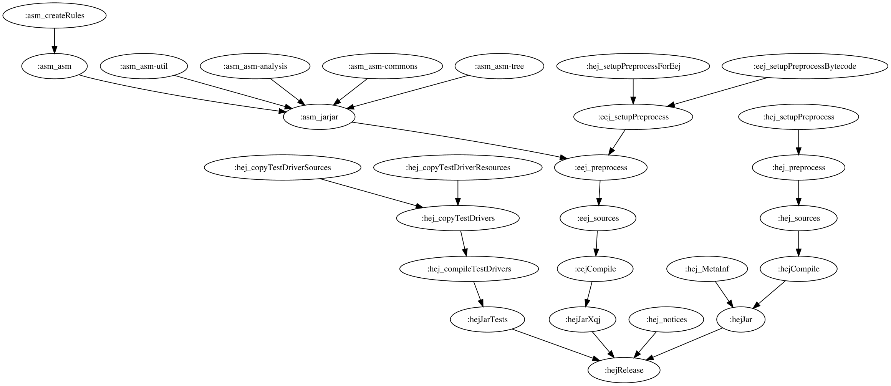

Building Saxon
The Saxonica build.gradle file builds three products
across three platforms. The Java products can be built on any
platform. The .NET products can only be built on Windows. Saxon/C can
be built for any platform, but only for the platform that you’re on.
(In principle, the Linux version of Saxon/C can be built from any
platform with a Docker container, but this technique doesn’t extend to
the MacOS and Windows versions, so it hasn’t been pursued
agressively.)
Saxon/J
The default target for building a Java project in Gradle is
compileJava. Unfortunately, the Java sources for Saxon
need to be preprocessed in a variety of ways that the default task
knows nothing about.
Saxon HE/J
To compile Saxon, use the following tasks:
hejCompile, pejCompile, or eejCompile.
The targets
hejRelease, pejRelease, and eejRelease
build the
hejRelease